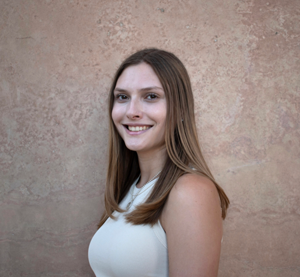

Behind The Lens

Vivian Perfetti
About Me
Hi! I am a photographer with a passion for creating photography pieces that speak to an abstract sense. I love being able to take something natural and make it into a statement piece. In my free time outside of photography I love to hike and go on outdoor adventures. I also love dogs, especially corgis!
Contact Information
Contact me at: vivperfetti@gmail.com
Follow me on: LinkedIn @Vivian Perfetti